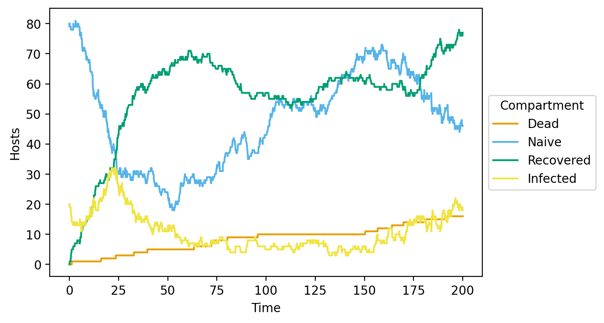

Vital dynamics
A. Vector-borne disease with natality spreading
Simple model of a vector-borne disease with 10% host mortality spreading among hosts and vectors that have natural birth and death rates in a single population. There is no evolution and pathogen genomes don’t affect spread.
[1]:
from opqua.model import Model
Model initialization and setup
Create a new Model object
[2]:
my_model = Model() # Make a new model object.
Define a Setup for our system
Create a new set of parameters called my_setup to be used to simulate a population in the model. Use the default parameter set for a vector-borne model.
[3]:
my_model.newSetup( # Create a new Setup.
'my_setup',
# Name of the setup.
preset='vector-borne',
# Use default 'vector-borne' parameters.
mortality_rate_host=1e-2,
# change the default host mortality rate to 10% of recovery rate
protection_upon_recovery_host=[0,10],
# make hosts immune to the genome that infected them if they recover
# [0,10] means that pathogen genome positions 0 through 9 will be saved
# as immune memory
birth_rate_host=1.5e-2,
# change the default host birth rate to 0.015 births/time unit
death_rate_host=1e-2,
# change the default natural host death rate to 0.01 births/time unit
birth_rate_vector=1e-2,
# change the default vector birth rate to 0.01 births/time unit
death_rate_vector=1e-2
# change the default natural vector death rate to 0.01 deaths/time unit
)
Create a population in our model
Create a new population of 100 hosts and 100 vectors called my_population. The population uses parameters stored in my_setup.
[4]:
my_model.newPopulation( # Create a new Population.
'my_population',
# Unique identifier for this population in the model.
'my_setup',
# Predefined Setup object with parameters for this population.
num_hosts=100,
# Number of hosts in the population with.
num_vectors=100
# Number of vectors in the population with.
)
Manipulate hosts and vectors in the population
Add pathogens with a genome of AAAAAAAAAA to 20 random hosts in population my_population.
[5]:
my_model.addPathogensToHosts( # Add specified pathogens to random hosts.
'my_population',
# ID of population to be modified.
{'AAAAAAAAAA':20}
# Dictionary containing pathogen genomes to add as keys and
# number of hosts each one will be added to as values.
)
Model simulation
[6]:
my_model.run( # Simulate model for a specified time between two time points.
0, # Initial time point.
200 # Final time point.
)
Simulating time: 66.7483164411631, event: BIRTH_HOST
Simulating time: 175.53517979111868, event: CONTACT_HOST_VECTOR
Simulating time: 200.00318125185066 END
Output data manipulation and visualization
Create a table with the results of the given model history
[7]:
data = my_model.saveToDataFrame(
# Creates a pandas Dataframe in long format with the given model history,
# with one host or vector per simulation time in each row.
'vector-borne_birth-death_example.csv'
# Name of the file to save the data to.
)
data
Saving file...
[Parallel(n_jobs=8)]: Using backend LokyBackend with 8 concurrent workers.
[Parallel(n_jobs=8)]: Done 2 tasks | elapsed: 0.3s
[Parallel(n_jobs=8)]: Batch computation too fast (0.1995853034973145s.) Setting batch_size=2.
[Parallel(n_jobs=8)]: Done 9 tasks | elapsed: 0.3s
[Parallel(n_jobs=8)]: Done 16 tasks | elapsed: 0.3s
[Parallel(n_jobs=8)]: Done 26 tasks | elapsed: 0.3s
[Parallel(n_jobs=8)]: Batch computation too fast (0.019458293914794922s.) Setting batch_size=4.
[Parallel(n_jobs=8)]: Done 44 tasks | elapsed: 0.4s
[Parallel(n_jobs=8)]: Batch computation too fast (0.020659446716308594s.) Setting batch_size=8.
[Parallel(n_jobs=8)]: Done 76 tasks | elapsed: 0.4s
[Parallel(n_jobs=8)]: Done 120 tasks | elapsed: 0.4s
[Parallel(n_jobs=8)]: Batch computation too fast (0.0252227783203125s.) Setting batch_size=16.
[Parallel(n_jobs=8)]: Done 224 tasks | elapsed: 0.5s
[Parallel(n_jobs=8)]: Batch computation too fast (0.04323148727416992s.) Setting batch_size=32.
[Parallel(n_jobs=8)]: Done 408 tasks | elapsed: 0.7s
[Parallel(n_jobs=8)]: Batch computation too fast (0.08730292320251465s.) Setting batch_size=64.
[Parallel(n_jobs=8)]: Done 792 tasks | elapsed: 0.9s
[Parallel(n_jobs=8)]: Batch computation too fast (0.18108701705932617s.) Setting batch_size=128.
[Parallel(n_jobs=8)]: Done 1233 tasks | elapsed: 1.1s
[Parallel(n_jobs=8)]: Done 1613 tasks | elapsed: 1.1s
[Parallel(n_jobs=8)]: Done 1698 tasks | elapsed: 1.1s
[Parallel(n_jobs=8)]: Done 1793 tasks | elapsed: 1.1s
[Parallel(n_jobs=8)]: Done 1888 tasks | elapsed: 1.1s
[Parallel(n_jobs=8)]: Done 1977 out of 1977 | elapsed: 1.1s finished
...file saved.
[7]:
| Time | Population | Organism | ID | Pathogens | Protection | Alive | |
|---|---|---|---|---|---|---|---|
| 0 | 0.0 | my_population | Host | my_population_0 | NaN | NaN | True |
| 1 | 0.0 | my_population | Host | my_population_1 | AAAAAAAAAA | NaN | True |
| 2 | 0.0 | my_population | Host | my_population_2 | NaN | NaN | True |
| 3 | 0.0 | my_population | Host | my_population_3 | NaN | NaN | True |
| 4 | 0.0 | my_population | Host | my_population_4 | NaN | NaN | True |
| ... | ... | ... | ... | ... | ... | ... | ... |
| 443810 | 200.0 | my_population | Host | my_population_120 | AAAAAAAAAA | NaN | False |
| 443811 | 200.0 | my_population | Host | my_population_136 | AAAAAAAAAA | NaN | False |
| 443812 | 200.0 | my_population | Host | my_population_117 | AAAAAAAAAA | NaN | False |
| 443813 | 200.0 | my_population | Host | my_population_136 | AAAAAAAAAA | NaN | False |
| 443814 | 200.0 | my_population | Host | my_population_112 | AAAAAAAAAA | NaN | False |
443815 rows × 7 columns
Create a compartment plot
Plot the number of susceptible and infected hosts in the model over time.
[8]:
plot = my_model.compartmentPlot(
# Create plot with number of naive, infected, recovered, dead hosts/vectors vs. time.
'vector-borne_birth-death_example.png',
# File path, name, and extension to save plot under.
data
# Dataframe containing model history.
)
